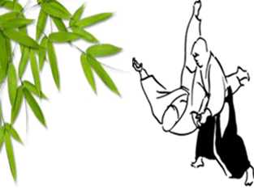

Aikikai du Golfe, Cotonou-Bénin

Le Dojo d'Aikido est un endroit où l'on vient affiner son esprit en aiguisant son corps et ses sens dans une pratique martiale. Cette pratique se fait sous la conduite d'un Sensei, c'est à dire littéralement "celui qui vient avant", l'aîné. Il est le gardien et le passeur de l'éthique et des techniques qui lui ont été transmises.
Le salut, rei, englobe les notions de politesse, courtoisie, hiérarchie, respect et gratitude. Le reishikiou étiquette est l’expression d’un respect mutuel. Suivre l’étiquette donne un environnement de pratique approprié, sûr, et agréable pour tous.Ayez donc l’obligeance d’observer les points suivants d’étiquette :
On dit que salut est le début et la fin de tout Art Martial. Salut signifie « jugement moral et respect ». Mais le sens est aussi en rapport avec la manière dont ils sont exprimés.
L’Aikido est un art : il enseigne une façon de vivre. En ce qu’il influence notre jugement moral et notre respect. Dans l’environnement de l’Aikido, jugement moral et respect s’expriment envers O’Sensei (le Fondateur de l’Aikido), le dojo,le Sensei (l’enseignant), les partenaires et ses propres armes et affaires.En fin de compte, la compréhension du salut par chacun s’étend au delà de l’environnement de l’Aikido. Si, de cette façon, l’expression de rei est très personnelle, son expression formelle dans le dojo est la suivante :
Avant d’entrer dans le Dojo, découvrez votre tête si besoin, et en pénétrant, saluez debout en direction du Shomen. Saluez également ainsi en quittant le Dojo.
En montant sur le tapis, asseyez-vous en seiza et faites un salut assis vers le Shomen environ 3 secondes. Inclinez le buste jusqu’à l’horizontale en abaissant vos mains et en les posant à plat devant vos genoux. Votre dos doit rester droit et la position doit être très stable. Ce salut est aussi requis lorsque vous quittez le tapis temporairement ou définitivement.Dans ces cas-là, demandez l’autorisation au Sensei pour quitter le tapis avant la fin du cours.
L’esprit du fondateur est toujours présent dans le Dojo à travers son héritage. C’est pourquoi nous exprimons notre gratitude et notre respect par un salut en seiza vers le Shomen au début et à la fin de chaque cours. Si vous êtes en retard, saluez de vous-même O’Sensei avant de rejoindre le cours.
Au début et à la fin du cours, juste après avoir salué O’Sensei, le Sensei et les pratiquants se saluent mutuellement. Quand on salue le Sensei au début du cours, il est convenable de dire « one gaeshimasu» (« accordez-moi la faveur de pratiquer ensemble ») tandis qu’à la fin du cours on dit « domo arigatogozaimashita» (« merci beaucoup »). Pendant le cours, saluez en seiza le Sensei lorsqu’il s’adresse à vous personnellement et dites « merci ». Remarquez aussi que pendant le cours on s’adresse à l’enseignant en disant « Sensei» et non par son nom personnel.
Votre partenaire est aussi le miroir de vous-même. Ignorer sa personnalité et son amour-propre va à l’encontre de l’esprit de l’Aikido.Il n’est pas quelqu’un avec qui vous luttez, mais une personne avec laquelle vous vous entraînez et vous progressez. Aider votre partenaire, c’est vous aider vous-même.Au début et à la fin de chaque technique, les partenaires se saluent mutuellement en seiza pour éliminer toute trace d’une agressivité éventuelle. On change de partenaire à chaque technique sauf aux armes où l’on reste ensemble tout le cours, sauf avis contraire de l’enseignant.
En Aikido, on pratique avec un bokken (sabre en bois), un jo (bâton), et un tanto (couteau en bois). Correctement employées,ces armes deviennent une extension de vous-même et sont un moyen de progression en Aikido. En tant que tel, elles nécessitent du respect et sont saluées avant et après usage comme suit : debout,tenez l’arme à deux mains au niveau des yeux, lame tournée vers vous, avec la pointe à votre gauche (sauf pour le jo qui n’en a pas) et saluez vers le Shomen en vous inclinant. Ne jetez jamais une arme, ni ne l’enjambez ou marchez dessus.
| 1 | : ichi | 2 | : ni |
| 3 | : shan | 4 | : shi(yon) |
| 5 | : go | 6 | : roku |
| 7 | : sichi | 8 | : hachi |
| 9 | : ku | 10 | : ju |
| Keikogi | tenue de pratique. |
| Hakama | : sorte de jupe-culotte plissée noire ou bleue. |
| laito | : |
| Jo | : bâton en bois. |
| Katana | : sabre réel, tranchant. |
| Tanto | : couteau en bois. |
| Shomen | : mur où figurent les attributs symboliques de l’Aikido. |
| Nage, Tori | : la personne qui exécute la technique. |
| Sensei | : l’enseignant, l’instructeur |
| Uke | : la personne qui reçoit la technique. |
| Yudansha | : porteur d’une ceinture noire |
| migi | : droit |
| hidari | : gauche |
| Ai hanmi | : partenaires face à face, chacun avec le pied droitou gauche, le même, en avant |
| Gyakuhanmi | : partenaires face à face, l’un avec le pied droit enavant, l’autre avec le pied gauche en avant |
| Hanmi | : posture de base en Aikido, qui signifie « mi-corps ». |
| Kamae | : posture, garde. |
| Maai | : distance mouvante (espace-temps) entre les deux partenaires se faisant face. |
| Seiza | : position à genoux, assis sur les talons, dos droit. |
| Mae ukemi | : chute avant. |
| Ushiro ukemi | : chute arrière |
| Hanmi handachi waza | :technique avec Nage assis et Uke debout. |
| Irimi | :mouvement entrant vers uke. |
| Omote waza | : mouvement entrant en face d’uke, considéré comme positif. |
| Shikko | :déplacements à genoux. |
| Suwari waza | :techniques à genoux. |
| Tachi waza | :techniques debout. |
| Tai sabaki | :déplacement du corps répondant à une attaque |
| Tenkan | :mouvement tournant, pivot sur la jambe avant, à 180° |
| Ura waza | :mouvement entrant derrière uke, considéré comme négatif |
| Ushiro waza | :techniques où uke attaque par l’arrière |
| Ai hanmi katate dori | :saisie croisée d’un poignet ( main gauche/poignet gauche par exemple). |
| Gyaku hanmi katate dori | :saisie en miroir d’un poignet (main gauche/poignet droit par exemple). |
| Kata dori | :saisie à l’épaule d’une main. |
| Katate dori | :saisie d’un poignet à une main. |
| Morote dori | :saisie d’un poignet à deux mains. |
| Muna dori | :saisie du revers de la veste à une main. |
| Ryote dori | :saisie des deux poignets à deux mains, deface, une main par poignet. |
| Ryo kata dori | :saisie des épaules à deux mains. |
| Shomen uchi | : frappe verticale partant du sommet de la tête. |
| Sode dori | : saisie d’une manche à une main. |
| Tsuki | : frappe en coup de pointe. |
| Ushiro ryo kata dori | : saisie arrière des épaules à deux mains. |
| Ushiro ryote dori | : saisie arrière des deux poignets à deux mains. |
| Yokomen uchi | : frappe en diagonale du tranchant de la main. |